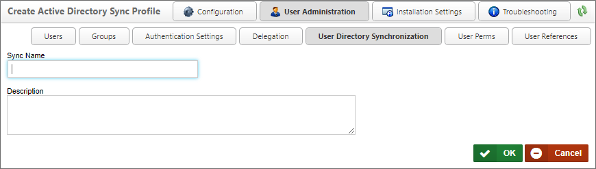
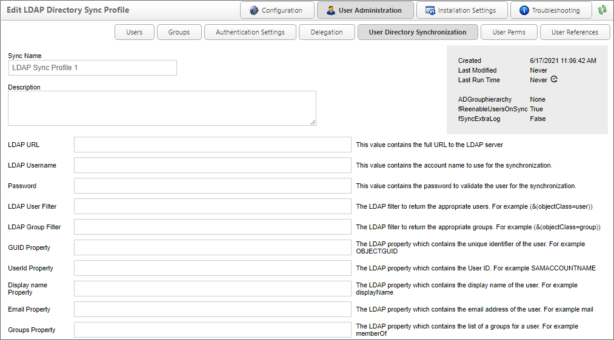

Creating an LDAP Sync Profile
This utility can be run manually, or scheduled to perform an automatic synchronization. To perform the synchronization, navigate to User Administration > User Directory Synchronization. Each sync configuration is a profile. Each profile will, after running, display when the synchronization was last performed, and the result of the synchronization.
You can create many profiles to sync specified users or groups of users. These profiles will be saved to the database so you may run them at any time. You can create a profile by selecting the Create LDAP Sync Profile link. Clicking this link will open the Create Active Directory Sync Profile page (This is the same page that's used to create a new AD Sync profile), into which you can enter the Sync Name and Description of the profile, then click the OK button to open the configuration page for the new profile.

Configure the profile by selecting the appropriate values for the settings displayed, then click the OK button to save the settings to the profile.

Synchronization Profile Properties #
The following properties are configurable in the Active Directory Sync Profile.
Sync Name
The name of the profile that will appear in the list of available profiles on the User Directory Synchronization page.
Description
An optional, brief description of the profile's purpose.
LDAP URL
The URL of the LDAP server with which you wish to synchronize.
LDAP Username
The LDAP User name that has permissions to pull data from the domain with which you wish to synchronize.
LDAP Group Filter
The LDAP filter to use, if any, to return only users in groups that match the filter.
Password
The password associated with the LDAP Username.
LDAP User Filter
The LDAP filter to use, if any, to return only users that match the filter.
GUID Property
The LDAP property that contains the unique identifier for each user.
UserId Property
The LDAP property that contains the UserID.
From the Display Name to the Custom Number Field
A list of fields that can be mapped to LDAP fields to store the relevant data contained in the LDAP Directory.
LDAP Options
This property consists of a series of check boxes you can check to select specific options to use during the Synchronization.
 These properties are specific to LDAP server access and/or binding. Please consult your LDAP administrator to determine which settings are appropriate, based on your LDAP server's configuration, as some of these settings are mutually exclusive.
These properties are specific to LDAP server access and/or binding. Please consult your LDAP administrator to determine which settings are appropriate, based on your LDAP server's configuration, as some of these settings are mutually exclusive.
- Secure: Use the Secure LDAP service to run the synchronization.
- Encryption: Use the STARTTLS (LDAP over TLS) service for the synchronization.
- Secure Sockets Layer: Use the LDAPS (LDAP over SSL) service for the synchronization.
- ReadOnlyServer: Specifies that a writable server isn't required, and to allow connection to a read-only cache/replica of the writable server.
- Anonymous: Enables anonymous binding.
- FastBind: Enables the server to process concurrent bind requests on the same connection.
- Signing: Enables the server to the server to reject Simple Authentication and Security Layer binds that don't request signing, or to reject LDAP simple binds that are performed on a clear-text connection.
- Sealing: Sealing encrypts the LDAP payload data to avoid transmitting it in clear-text.
- Delegation: Use the delegate account to perform the synchronization.
- ServerBind: Invokes the LDAP ServerBind method to determine how access to the LDAP server will be allowed.
Sync Objects
A series of check boxes that enable you to choose which object types to sync.
Limit Users to Group
This optional value will limit the users to sync to only the users within the specified group.
Limit Groups to Group
This optional value will limit the groups to sync to only the groups within the specified group.
Add Objects to Partitions
This optional dropdown value lists the partitions that exist on the installation, and enables you to specify the partition to which to add the synchronization objects.
Add Users to Groups
This optional value specifies to which Process Director groups to add the synchronization users.
Do Not Disable
This option indicates that the synchronization will add new objects from an LDAP Sync, but will NOT disable already existing users or groups which the sync doesn't find.
Remove Users From Groups
This option indicates that the synchronization will remove users from groups in Process Director when they are removed from the LDAP group.
Add as Day Pass Users
This option indicates that the synchronized users should be added as licensed day pass users. This option is only relevant to installations licensed for user passes.
Debug Mode
This option runs the synchronization in "Debug Mode" - providing more verbose logging.
Test Mode
This option causes the synchronization to fetch all the object to synchronize without adding them to Process Director.
Interactively Run This Sync Profile
Clicking this button will manually run the Synchronization. By default, the Sync will run in Test Mode, so you'll need to be sure to uncheck the Test Mode property to run an actual sync.
Operation of the LDAP Sync Profile
While the configuration settings for Active Directory and LDAP synchronization profiles are slightly different, all synchronization operation operate identically. For information on synchronization methods, Synchronization Logs, and synchronization issues, please refer to the Creating an Active Directory Sync Profile topic, or these specific sections of that topic:
Continue
Continue to the documentation for the Creating an AD Sync Profile, User Perms, and User References pages, all of which are included in the main User Administration topic.